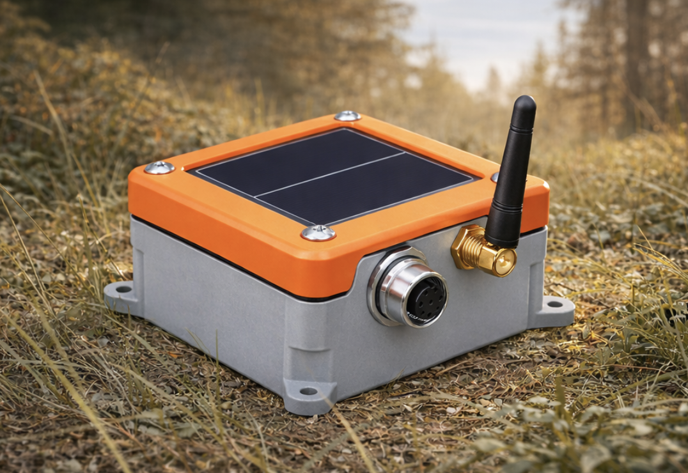

Field-proven hardware and cloud software for pipeline inline inspection. Every product is designed to work together as a system.
/jee-ohd/
The Remote Tracking Device that replaces your entire AGM fleet. Four sensor channels, LTE-M connectivity, solar power, and cloud integration in one ruggedized enclosure.

Traditional moving-coil geophone for direct ground coupling. Industry-standard sensitivity with weatherproof housing. Connects to Geode RTD via rugged M12 connector.
High-sensitivity external ELF detection coil for challenging terrain. Optimized for wet ground, swamp crossings, and deep-buried pipeline. Extended detection range vs. internal coil.
Universal analog input for third-party industrial sensors. Connect any 4–20mA pressure transducer, flow meter, or level sensor to the Geode for remote monitoring.
The command center for remote pig tracking. Real-time waveform charts, fleet health dashboard, passage time marking, and project-based device management. Azure IoT Hub backbone with enterprise-grade security.
Every Geode hosts a WiFi access point with a built-in web dashboard. Connect from your phone in the field to verify deployment, check sensors, view live data, and configure the device — no cloud required.
Next-generation products expanding the Scissortail ecosystem.
Ultra-compact recorder-only variant. No LTE — pure SD card logging with extended battery life. Drop, record, retrieve. For operators who need 50+ units on a single run at minimum cost.
On-device machine learning for automatic pig passage detection. Trained on thousands of real passage events. Flags candidate passages in real time while the human tracker retains final authority.
Solar-powered LoRa relay for dead-zone coverage. Place between Geode RTDs to bridge LTE coverage gaps in remote pipeline corridors. Transparent data forwarding to the nearest LTE-connected RTD.
Permanent-install acoustic leak detection using the Geode platform. Continuous low-power monitoring of pipeline acoustic signatures with cloud-based anomaly detection for early leak identification.
Remote cathodic protection monitoring. Reads pipe-to-soil potential via the Geode's 4–20mA input and streams CP data to the cloud. Eliminates manual CP survey truck rolls.
Your brand. Our hardware. Geode can be manufactured under your label. We handle firmware, cloud, and support. You focus on your customers.
Discuss Partnership